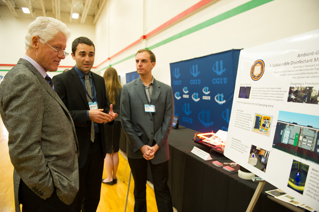
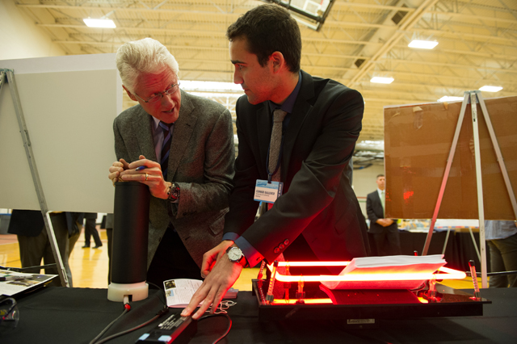

News
April 2013
Matt and Connor met President Bill Clinton at the CGIU Exchange and discussed the issues surrounding public health and sanitation in health care facilities. The PlasMachine team got the chance to demonstrate a working prototype to President Clinton.
